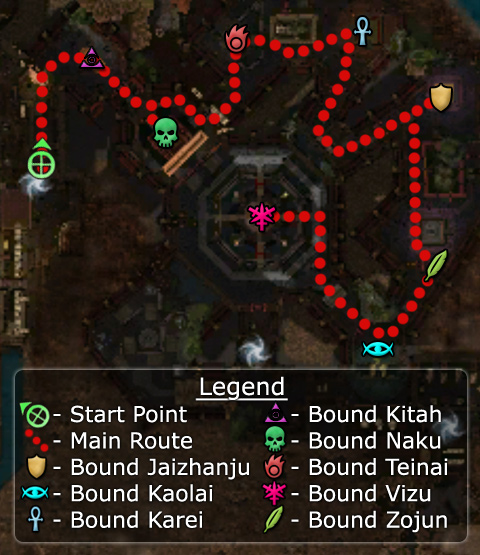

Elite: Auspicious Parry
M5
Tahnnakai Temple
◉ Mission Map

Click to enlarge · Local cache · Wiki
Summary (click to expand)
Free the spirits of the heroes of ancient Cantha . Get to Vizu before she is consumed by Shiro .
Region: Kaineng City · Mission: 5 of 13 · Type: Cooperative
✓ Objectives
→ Walkthrough
Your goal is to defeat eight bosses in eight separate rooms, representing souls that have been bound by Shiro. As each soul is released, it will open the door to the next room, and you continue until your reach the eighth and final room. The mission fails if either Togo or Mhenlo die or if the party wipes.
This can be one of the harder Factions missions, especially when using only heroes and henchmen, particularly when trying to earn the Master's Reward. Although the mission is timed and Togo keeps urging the party to hurry, take your time: as you defeat each of the bosses below, the countdown clock is set back; as long as your progress is steady, there is more than enough time to finish.
One of the main problems solo players will encounter when pulling is that Mhenlo and Togo will follow them, often resulting in their deaths and mission failure. A solution to this is to use a bow (a flatbow or longbow) or heroes to pull. Flag a high-armour hero (e. g. Warrior) to aggro range of a mob while you hold back in safety to lure them to you. Using spells like Protective Spirit and Mantra of Flame helps here. If you are playing as a melee character, pulling can be especially dangerous if you have the rest of your party flagged further back. In this case it may be easier if you simply do not front line and hold back to ensure their safety (you can mop up any enemies that rush forwards). A minion master can provide the front line and an effective meat shield - use bridges and walls as choke points.
Another solution to avoid Mhenlo and Togo getting killed is to stuck them in the start room using Recall, which is especially useful in hard mode. Clear room 1 (Kitah) as usual, as soon as you enter room 2 (Naku), flag your heroes on the bottom of the stairs and use Recall on one of them. Walk back to the start room to the Portal which leads to the outpost to the corner farthest away from the rest of your party. Note that if you have other human players in the party, they need to stand still, otherwise Mhenlo and Togo won't follow you. You can then end recall and unflag your heroes - Mhenlo's and Togo's names should be now gray in the party list and they won't follow any longer.
In general, keep the party apart to avoid damage from area of effect (AoE) skills (particularly from Temple Guardians, Afflicted Elementalists, and Monks). Typically, the trick is to keep most of the party back, pull enemies with a long range weapon like a staff or a long bow, and retreat. The Afflicted will then chase that party member, bunching up and allowing the party to use AoE skills against them.
In some of the rooms, the Afflicted may be patrolling or move into a different formation after the party enters. This may seem like they have detected the party, which is not the case. Stay calm, fall back and keep the same tactics: do not rush in and pull them carefully to avoid aggroing too many enemies.
In the first seven rooms, you only need to kill the boss to trigger the opening of the gate. However, you should still kill everything, since it is nearly impossible to get Togo and Mhenlo through the rooms safely.
- Room 1 - Kitah
Fight the 2 pairs of Temple Guardians separately from the main group. If you're careful you should be able to sneak past the first group of Temple Guardians. As with all Afflicted groups, concentrate on their monks and powerful Ritualists first.
- Room 2 - Naku
The groups to the left, right and center can be pulled separately. This is most easily accomplished by pulling the right group first and back into the walkway, then the center and finally the left.
- Room 3 - Teinai
All the enemies in this room, with the exception of Teinai herself, form one large group. You can pull the Afflicted to the corner near the entrance and kill them there, before fighting Teinai. Be wary of her Sliver Armor and Star Burst which can kill multiple characters in seconds.
- Room 4 - Karei
Like in the first room, fight the Temple Guardians separately from the main group before killing the boss.
- Room 5 - Jaizhanju
The group to the right can be pulled independently of the main group. Additionally, pulling can make the enemy warriors rush out of range of their healers. Two doors lead to the next room. While it is sufficient to kill the group guarding one door, the other will join in while the players fight in the next group, therefore it is easier to kill both beforehand.
- Room 6 - Zojun
It is easier to pull the Temple Guardians separately if taking the left door. After the party enters, any remaining enemies from the previous room will rush in, and a couple of small Afflicted groups will move towards the two sets of stairs. Wait until they move out, then kill those first, then pull and kill the Temple Guardians, then the main group. You can use the wall just beyond the stairs to hide behind. With careful manipulation of enemy aggro, you can get them all to bunch up by the corner for easy AoE damage.
- Room 7 - Kaolai
Beware of the patrols rushing in on you in this room and watch out for the high powered elementalists. Keep in mind that the boss is a Ritualist that uses Restoration, an AoE resurrect. This is arguably the hardest room. The elementalists are lethal and will decimate unprepared teams frighteningly quickly. Set up protective spirits (a Soul Twisting ritualist can be useful here) and use a hero (preferably with protective spirit) to pull the enemies towards your group. Try and flag your heroes out as much as possible. The group leader should be careful if engaging because of Togo and Mhenlo. With a bit of luck, you'll get the enemies running into your team one-by-one and die.
- Room 8 - Vizu
Single Afflicted Rangers patrol this circular room clockwise and counter-clockwise. They, as well as the pairs of Temple Guardians protecting the bridges to the center, do not need to be killed to finish the mission. However, do take care of those patrols that might aggro on your backline while engaging the boss group. While fighting the last group, it is advisable to have your melee fighters pull the big enemy group onto the bridge and body block them there, thus protecting your backline. All enemies in the center need to be killed to finish the mission (even those that might not initially aggro with the rest of the group) - killing Vizu does not automatically end the mission. Also, watch out for powerful AoE. Sometimes your group will get mobbed and cannot advance beyond the bridge, and will be torn to pieces by AoE in seconds, try flagging heroes and henchman around for less damage to your party.
★ Bonus
See walkthrough and objectives for bonus details (if any).
◆ Hard Mode
No dedicated Hard Mode section on the wiki — expect tougher foes and adjusted mechanics. See walkthrough notes.
☠ Bosses & Elites
Elite: Famine
Elite: Spell Breaker
Elite: Wail of Doom
Elite: Arcane Languor
Elite: Star Burst
Elite: Shroud of Silence
Elite: Defiant Was Xinrae
✦ Tips & Notes
Skill recommendations
- Skills that deal AoE damage work well here since there are plenty of clumped-together enemies; however, many Afflicted Soul Explosions may trigger at the same time because of the AoE damage.
- Since you kill a boss in each room (approximately once every 3 minutes), you can take Resurrection Signets or Sunspear Rebirth Signets instead of hard resurrection skills.
- Minion masters will have plenty of corpses; their minions form valuable meat shields to reduce the chances of Afflicted Soul Explosions affecting party members.
- Elementalists can combine Glyph of Sacrifice with Meteor Shower to target the bosses in each room for fast damage and knock downs; killing the boss recharges both skills, negating the added delay from the glyph.
- Pain Inverter is useful against the AoE damage of the Temple Guardians.
- Consider bringing Mantra of Flame or skills that protect against elemental damage, since Afflicted Rangers, Afflicted Elementalists, and Temple Guardians have skills that deal fire damage.
- The touch skills of Ursan, Volfen or Raven Blessing work through blindness, Aegis and Sliver Armor. Asuran Scan is also an option since Afflicted in this mission cannot remove hexes, but remember that Karei and Kitah have hex removal skills, so it may have to be covered or reapplied against those two bosses.
- Enchantment-based builds are vulnerable to enchantment removal by Afflicted Necromancers and Mesmers. Afflicted that deal physical damage can also remove enchantments when enchanted with Afflicted Necromancer's Order of Apostasy.
- Condition removal is helpful for the Afflicted Rangers, who will cause blindness.
Notes
- Though all of the Bound bosses except Naku and Vizu have skills named after them (e.g., Jaizhenju Strike), none of them use any of their namesake skills.
- If you wish to capture Vizu's elite, Shroud of Silence, you must defeat her before killing off her mob, as the cinematic will start almost immediately after the mob is defeated.
- The countdown timer for Vizu to be consumed by Shiro stays in front of all NPC messages, possibly hindering the reading of the message. This can be avoided by rearranging the user interface through the interface tab of the F11 menu.
- The bound spirits do not instantly open the gates when freed, but instead speak some lines of dialogue when you run over to them, and finally cast a spell to open the gates. As this takes valuable minutes in a mission with somewhat tight time constraints, it may be advantageous to kill the bosses before you've eliminated their entire party, and kill off the remaining mobs while they are dawdling about.
- Completion of this mission will fill in page #3 of the Shiro's Return storybook.